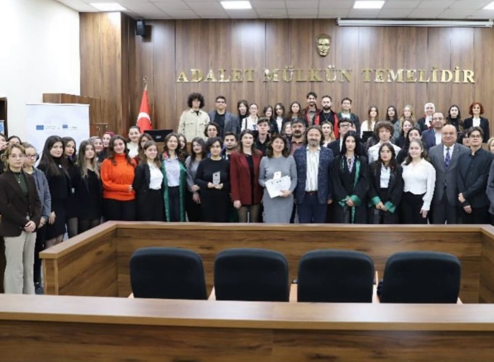

Jean Monnet Modülü
EU DEEP
Avrupa Birliği politikaları, eşitlik, insan hakları ve uluslararası iş birliği üzerine akademik program.
EUAcademic
Akademik, hukuki, çevresel ve kültürel çalışmalardan seçkiler.
Avrupa Birliği politikaları, eşitlik, insan hakları ve uluslararası iş birliği üzerine akademik program.

12 haftalık uygulamalı hukuk eğitimi ve duruşma simülasyonu.
Çevre politikaları, sürdürülebilir kalkınma ve uluslararası müzakere süreçleri.
Kriz senaryolarında hızlı karar alma, strateji ve ekip koordinasyonu.
Proje geliştirme, ekip koordinasyonu ve yaratıcı içerik üretimi.